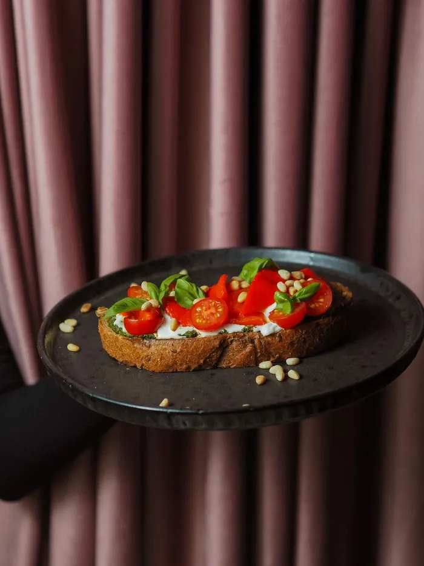
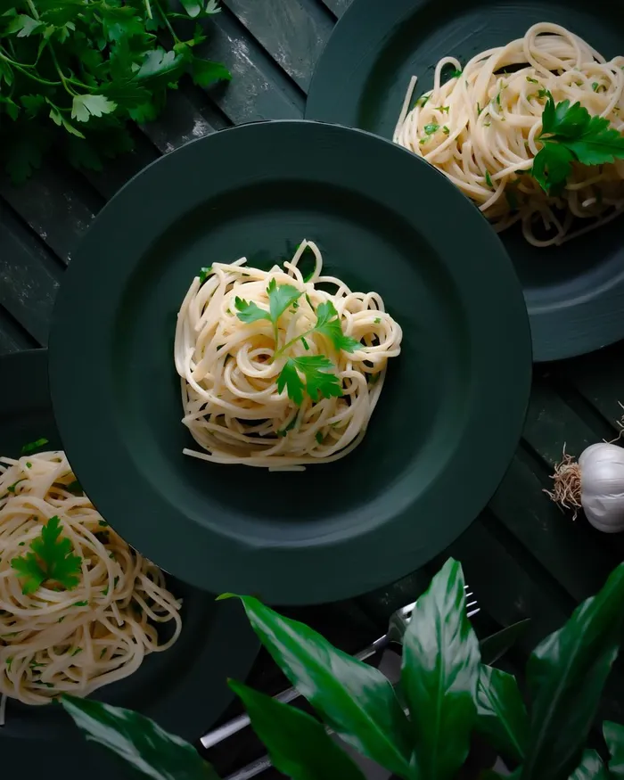
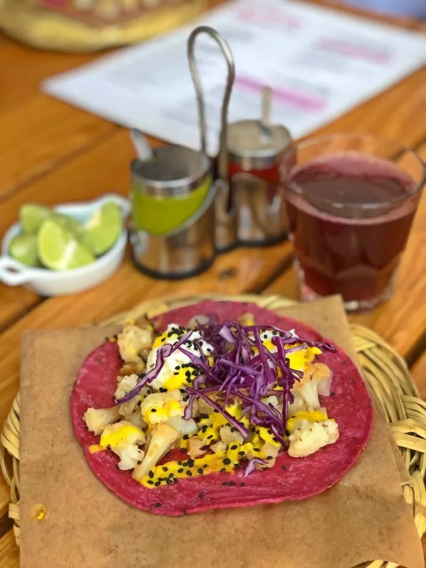
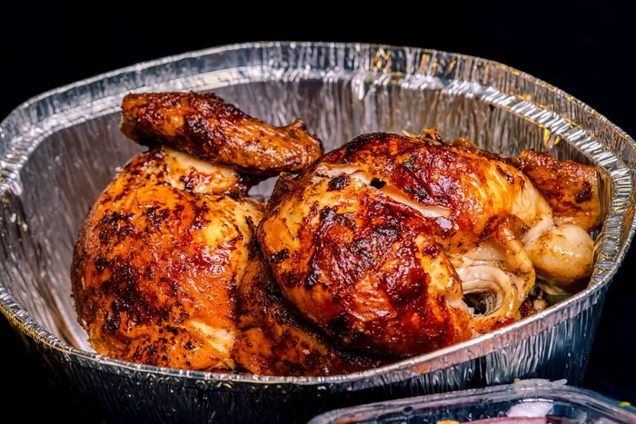
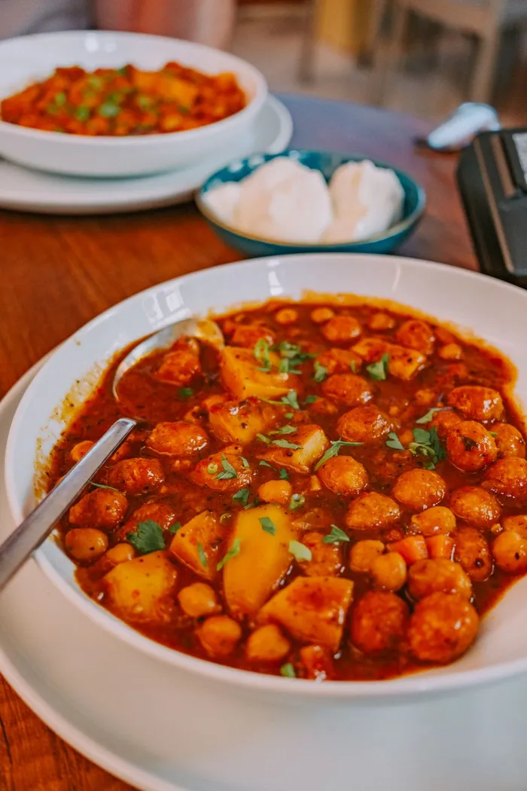

Diet (pick any)
Fluffy, naturally sweet and kind to Sunday mornings.
15 minServes 2EasyVegetarian

Summer on a slice, no cooking required.
10 minServes 2EasyVegetarian
Creamy, comforting and ready in half an hour.
30 minServes 4EasyVegan
Sticky, salty, sweet and wonderfully fresh.
25 minServes 2MediumHigh-protein

Silky, zesty and on the table in twenty minutes.
20 minServes 2EasyVegetarian
Deep, savoury and surprisingly quick for a bowl this good.
30 minServes 2MediumVegan

Charred, spicy and piled high with crunchy slaw.
40 minServes 4EasyVegan

One tray, big flavour and almost no washing up.
45 minServes 4EasyGluten-free

A warming one-pot dinner that tastes even better tomorrow.
35 minServes 4EasyVegan
The classic pudding, with a little cinnamon and a lot of crunch.
55 minServes 6EasyVegetarian
Nothing matches.
Try fewer filters or a longer cooking time.